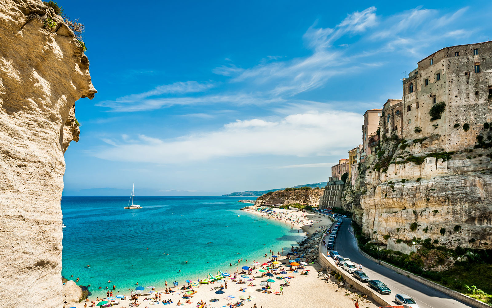
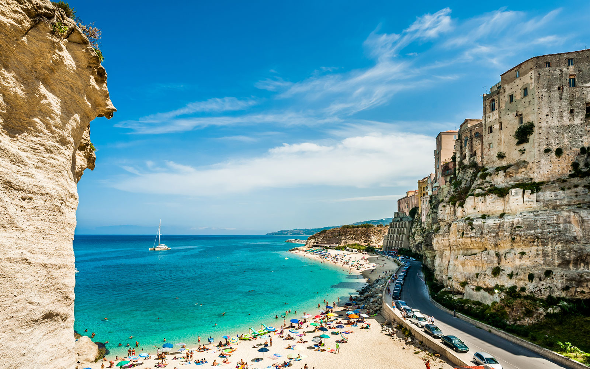

Places to visit in Italy
"Tropea Beach"
 

Tropea‘s two and a half miles of pristine white beaches are among the cleanest and best in Italy. Dramatic rock formations, cliffs, coves, and grottoes dot the coastline, holding ground against the sparkling, turquoise, Caribbean-like water. Tropea has both public (free) and private (fee) beaches. Bring or rent an umbrella, soak in the rays, take a dip in the Tyrrhenian, and watch tiny fish swim through your legs, or rent canoes, paddle boats, or rubber dinghies. TropeaSub Diving Center is open year-round and offers snorkeling and scuba diving. Set high above Tropea’s beaches on a rocky promontory is the Sanctuary of Santa Maria dell’Isola, a 6th-century Benedictine monastery. Earthquakes in 1783 and 1905 hit the structure hard, and the church has been rebuilt, giving it a more modern look. Wear your walking shoes and bring a bottle of water for the trek to the top—about 300 steps up a staircase built into the rock around 1810. Santa Maria dell’Isola is the classic postcard shot of Tropea, with incredible views to Sicily’s Aeolian Islands. When you reach the sanctuary, be sure to also admire the stacked houses of old Tropea, impossibly clinging to their own immense rock opposite the church.
"How to get here"
To get there at Tropea Beach, the nearest airport to Tropea is at Lamezia Terme. From the airport, catch a bus or take a taxi to Lamezia Terme station. The train journey to Tropea takes an hour and costs just over €3.
"Other Places to Visit in Italy"

Milan Cathedral, Italy
Milan Cathedral is the cathedral church of Milan, Lombardy, Italy. Dedicated to the Nativity of St Mary, it is the seat of the Archbishop of Milan, currently Archbishop Mario Delpini. The cathedral took nearly six centuries to complete: construction began in 1386, and the final details were completed in 1965.

Pisa and Lucca
These two nearby towns are worth visiting while you're in Tuscany, the first for the exceptional Campo dei Miracoli complex and the other for its endearing charms. The Leaning Tower of Pisa, actually the campanile for the adjacent cathedral, is a well-known Italian icon, and forms the centerpiece of a UNESCO World Heritage site that also includes the cathedral, baptistery, and Campo Santo.